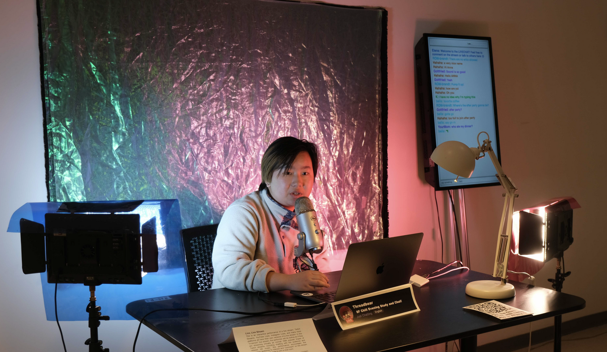
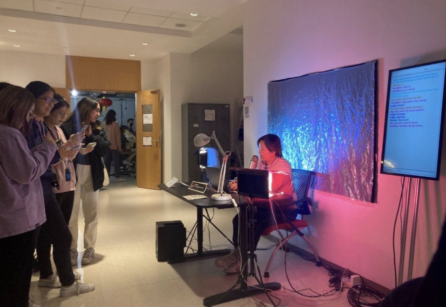

In my interactive performance Live, Livestream I simulate a live stream in an in-person setting to explore the concept of streaming and the culture that surrounds it. Creating a small set to reflect a traditional streaming set up as well as a live chat box accessible by phone, I sat at the desk and had a casual dialogue with the audience’s chat comments. With background lofi music and colorful lighting to set a relaxing mood, I only interacted with comments from the chat to simulate the barrier of an online setting. The live chat allows an audience member to create a username and send any messages to be seen on a screen next to me. Keeping a light tone, I let the direction of the performance be steered by the audience. While many live streams have very thoughtful commentary, others’ have very superfluous and non consequential content. To give the audience power to steer the direction of the stream, I encouraged a fairly light conversation by giving brief opinions on comments and asking the audience questions.
Creating this work, I took inspiration from Lauren Lee McCarthy’s performance pieces including her Lauren Series where she imagined a human version of Amazon Alexa. Fabricating digital interactions or protocols and making a physical performance out of it, McCarthy’s work often integrates audience interaction into her work. While in my approach I tried to mimic a traditional live stream set up, the in-person nature of the set and my performance as a streamer allowed me to simulate the protocols of a stream through the fabricated online chat box. While some audience members tried to speak directly to me, others nearby would explain that they needed to use the chat function to communicate with me. This brief project lacked the depth of many real live stream communities, but exercised the dialogue between a performer and audience through a fabricated online barrier.
The live chat allowed users to come up with a username and write messages viewable by everyone. Most of the comments were silly comments that allowed the audience to interact anonymously. The live chat was accessible through a QR code and was also projected on the monitor beside me. It was created using socket.io and uploaded through Glitch.
